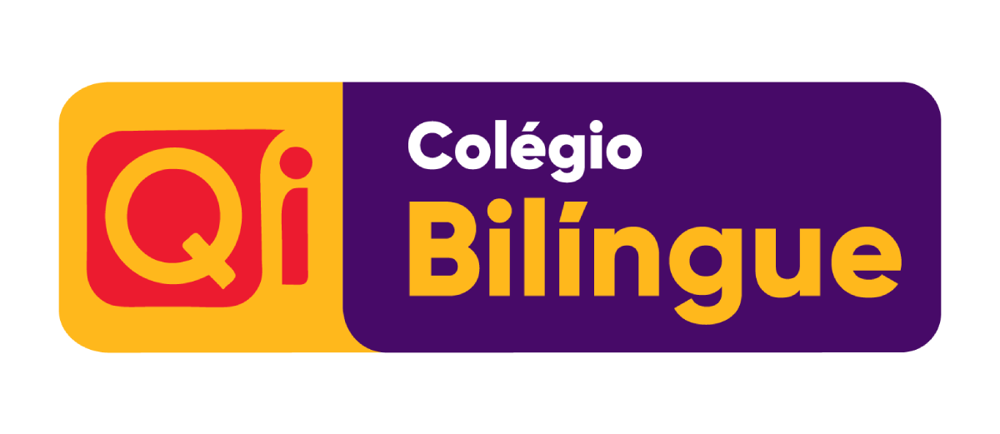
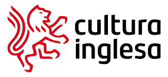

Um pouco sobre mim
Olá! Me chamo Lawrence Ugborh, tenho 18 anos e sou apaixonado pela área tecnológica. Escolhi cursar Ciência da Computação por ser um campo vasto, dinâmico e repleto de oportunidades. Além de estar em constante expansão no mercado de trabalho, a área proporciona a possibilidade de atuar em diversos segmentos, como desenvolvimento de software, inteligência artificial, segurança da informação, entre outros. Acredito que essa formação me permitirá crescer profissionalmente, desenvolver soluções inovadoras e contribuir de forma significativa para a evolução tecnológica da sociedade.
Carreira acadêmica 📚
Ensino Médio
- Concluído em 2024 pelo Colégio Qi, destacando-me pelo compromisso e excelente aproveitamento acadêmico.
- Durante esse período, desenvolvi habilidades essenciais, como pensamento crítico, trabalho em equipe e gestão de tempo, que foram fundamentais para meu crescimento pessoal e acadêmico.

Curso de Inglês
- Concluído em 2023 pela Cultura Inglesa, obtendo proficiência em inglês fluente.
- O curso proporcionou não apenas o domínio do idioma, mas também o aprimoramento das minhas habilidades de comunicação, escrita e compreensão cultural, fundamentais para contextos acadêmicos e profissionais.

Formação Contínua
- Atualmente, sigo ampliando meu conhecimento em Ciência da Computação, sempre buscando novos desafios e oportunidades de aprendizado.